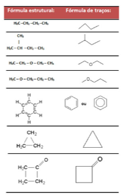

Capítulo 5
Alimentos, energia e as relações com a Indústria de alimentos
Se os alimentos são responsáveis pela produção de energia, de onde vem a energia das plantas, dos vegetais das frutas? Os alimentos podem produzir a mesma quantidade de energia? De que forma a indústria alimentícia pode contribuir para a produção de alimentos saudáveis?
CONTEXTUALIZANDOPara manutenção do corpo precisamos de energia, seja para uma atividade física intensa ou para mantermos os batimentos cardíacos. Mas qual a fonte para buscarmos esta energia? Nossa principal fonte de energia é encontrada nos  alimentos que ingerimos que fornecem o suficiente e necessário para nossa sobrevivência. No organismo dos seres vivos ocorrem inúmeras reações denominadas de Reações de combustão. Estas são responsáveis pelas transformações químicas dos constituintes dos alimentos em substâncias necessárias aos vários processos responsáveis pela manutenção da vida. Assim precisamos entender de que forma os alimentos se transformam em energia para o nosso organismo.
(Re) construindo ConceitosPara estudarmos as transformações Físicas e as reações Químicas associadas à energia vamos iniciar conhecendo os conceitos da termoquímica. Todas as substâncias contêm uma determinada energia e perceber em diferentes contextos nos é relevante. Tanto as transformações físicas quanto as reações Químicas quase sempre envolvem em perda ou ganho de calor. O calor é uma das formas de energia mais comum que conhecemos. Desta forma, a Termoquímica é uma parte da Química que faz o estudo das quantidades de calor liberadas ou absorvidas durante as reações químicas, essa variação de energia é o objeto de estudo da Termoquímica. Basearemos nossas atividades em questionamentos.
1ª Pergunta: Como medir a variação de energia em reações químicas?